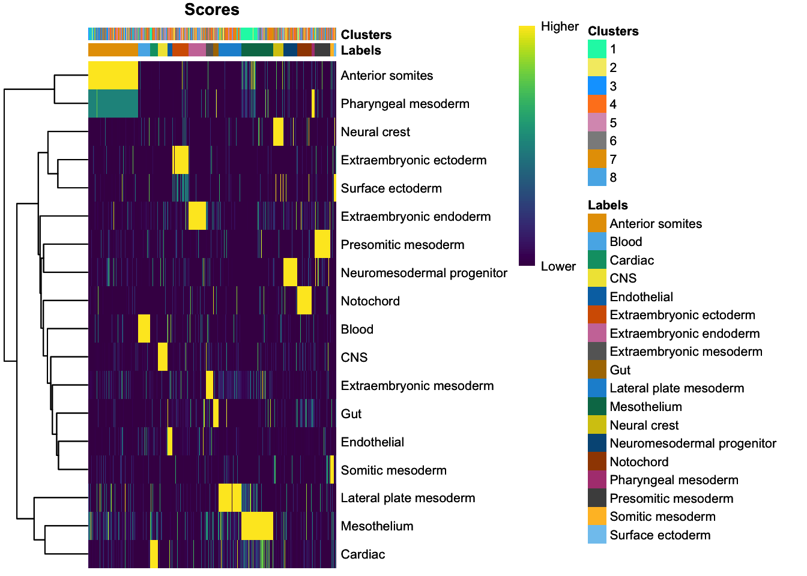
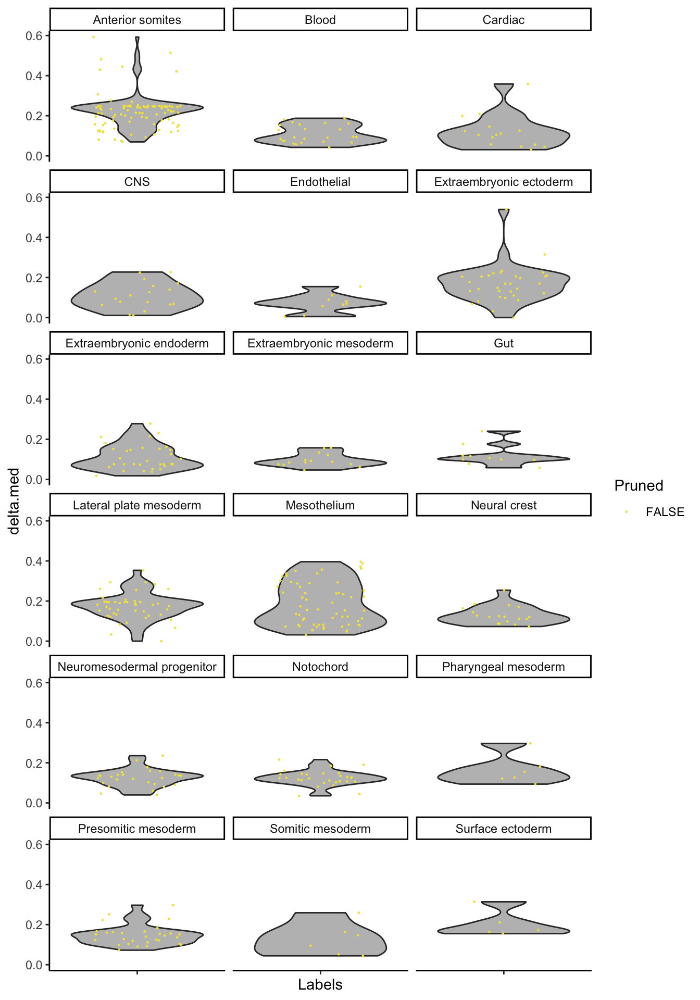
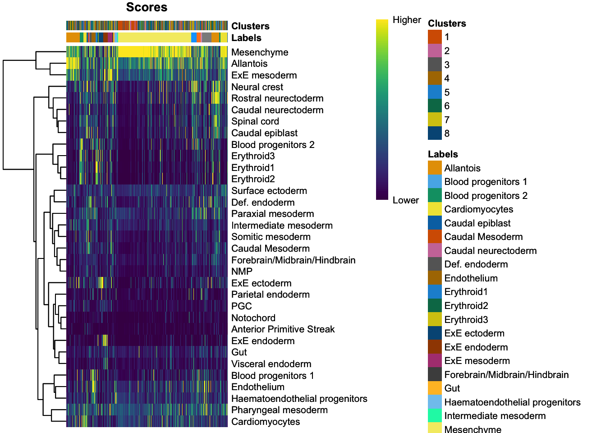
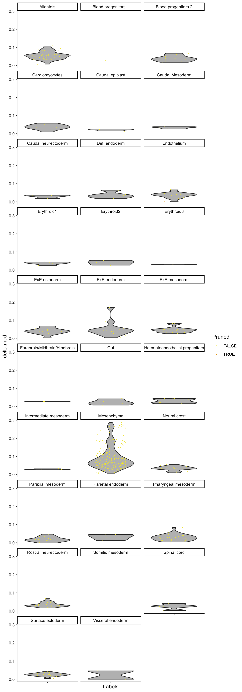

Last updated: 2021-07-29
Checks: 7 0
Knit directory: YS_KDR_HOM_4/
This reproducible R Markdown analysis was created with workflowr (version 1.6.2). The Checks tab describes the reproducibility checks that were applied when the results were created. The Past versions tab lists the development history.
Great! Since the R Markdown file has been committed to the Git repository, you know the exact version of the code that produced these results.
Great job! The global environment was empty. Objects defined in the global environment can affect the analysis in your R Markdown file in unknown ways. For reproduciblity it’s best to always run the code in an empty environment.
The command set.seed(20200510) was run prior to running the code in the R Markdown file. Setting a seed ensures that any results that rely on randomness, e.g. subsampling or permutations, are reproducible.
Great job! Recording the operating system, R version, and package versions is critical for reproducibility.
Nice! There were no cached chunks for this analysis, so you can be confident that you successfully produced the results during this run.
Great job! Using relative paths to the files within your workflowr project makes it easier to run your code on other machines.
Great! You are using Git for version control. Tracking code development and connecting the code version to the results is critical for reproducibility.
The results in this page were generated with repository version f0c3b96. See the Past versions tab to see a history of the changes made to the R Markdown and HTML files.
Note that you need to be careful to ensure that all relevant files for the analysis have been committed to Git prior to generating the results (you can use wflow_publish or wflow_git_commit). workflowr only checks the R Markdown file, but you know if there are other scripts or data files that it depends on. Below is the status of the Git repository when the results were generated:
Ignored files:
Ignored: .Rhistory
Ignored: .Rproj.user/
Ignored: analysis/cache/
Untracked files:
Untracked: _workflowr.R
Untracked: analysis/interactive.Rmd
Untracked: analysis/scenic-analysis.Rmd
Untracked: code/cleanEmbryoAtlasData.R
Untracked: renv.lock
Untracked: renv/
Unstaged changes:
Modified: .Rprofile
Modified: .gitignore
Modified: analysis/_site.yml
Note that any generated files, e.g. HTML, png, CSS, etc., are not included in this status report because it is ok for generated content to have uncommitted changes.
These are the previous versions of the repository in which changes were made to the R Markdown (analysis/09-cell-annotation.Rmd) and HTML (docs/09-cell-annotation.html) files. If you’ve configured a remote Git repository (see ?wflow_git_remote), click on the hyperlinks in the table below to view the files as they were in that past version.
| File | Version | Author | Date | Message |
|---|---|---|---|---|
| Rmd | 2d497b0 | James Ashmore | 2021-07-29 | Build |
In this analysis we are going to annotate previously defined clusters with a cell type label. This process can be done manually using a domain expert’s knowledge or automatically based on known markers and reference data.
Define chunk options:
knitr::opts_chunk$set(
autodep = TRUE,
cache = TRUE,
cache.lazy = FALSE,
cache.path = "cache/09-cell-annotation.Rmd/",
dev = "png",
error = FALSE,
message = FALSE,
warning = FALSE,
fig.align = "center",
out.width = '100%'
)Attach required packages:
library(AUCell)
library(SingleR)
library(GSEABase)
library(scran)
library(scater)
library(patchwork)
library(pheatmap)Source custom functions:
source("code/cleanEmbryoAtlasData.R")Import experiment data:
sce <- readRDS("output/08-marker-detection.rds")Read gene sets from disk and check they are present in the data:
all <- read.csv("data/markers.csv", stringsAsFactors = FALSE)
all <- all[all$gene_id %in% rowData(sce)$gene_id, ]Format gene sets for entry into the AUCell package:
all <- split(all, all$gene_set)
all <- lapply(all, function(x) GeneSet(x$gene_id, setName = unique(x$gene_set)))
all <- GeneSetCollection(all)Use the AUCell package to identify gene sets that are highly expressed in each cell:
mat <- counts(sce)
rownames(mat) <- rowData(sce)$gene_id
fit <- AUCell_buildRankings(mat, plotStats = FALSE, verbose = FALSE)
auc <- AUCell_calcAUC(all, fit)Get assignments from AUCell scores:
res <- t(assay(auc))
lab <- colnames(res)[max.col(res)]Store AUCell assignments in experiment data:
sce$celltype_aucell <- labCreate results table for use with SingleR functions:
dat <- DataFrame(scores = I(res), labels = lab, pruned.labels = lab, row.names = rownames(res))Create a heatmap of the AUCell assignment scores:
plotScoreHeatmap(dat, clusters = sce$cluster, fontsize = 8)
Plot score distributions of labels:
plotScoreDistribution(dat, show = "delta.med", ncol = 3, show.nmads = 3)
Load the mouse gastrulation data package:
library(MouseGastrulationData)Subset atlas sample metadata by embryonic stage:
AtlasSampleMetadata <- subset(AtlasSampleMetadata, stage == "E8.25")Retrieve processed samples from embryo atlas data:
ref <- EmbryoAtlasData(type = "processed", samples = AtlasSampleMetadata$sample)Clean processed samples from embryo atlas data:
ref <- cleanEmbryoAtlasData(ref)Identify marker genes for each cell type whilst blocking on sample:
res <- pairwiseWilcox(logcounts(ref), groups = ref$celltype, block = ref$sample)
sig <- getTopMarkers(res$statistics, res$pairs)Aggregate references within each celltype and sample combination:
lab <- paste(ref$celltype, ref$sample, sep = "-")
ref <- aggregateReference(ref, labels = lab)Remove sample label from aggregated reference names:
lab <- sapply(strsplit(colnames(ref), "-"), '[', 1)Return the best annotation for each cell in the test dataset:
ids <- rownames(sce) # save original feature names
rownames(sce) <- rowData(sce)$gene_id # make feature names compatible
fit <- SingleR(sce, ref, labels = lab, genes = sig)
rownames(sce) <- ids # return original feature namesStore SingleR assignments in experiment data:
sce$celltype_singler <- fit$labelsCreate a heatmap of the average SingleR assignment scores:
plotScoreHeatmap(fit, clusters = sce$cluster, fontsize = 8)
Plot score distributions of labels:
plotScoreDistribution(fit, show = "delta.med", ncol = 3, show.nmads = 3)
Choose cell type annotation method for downstream analysis:
sce$celltype <- sce$celltype_singlerSave experiment object to disk:
saveRDS(sce, file = "output/09-cell-annotation.rds")Print session information:
sessionInfo()R version 4.0.2 (2020-06-22)
Platform: x86_64-apple-darwin17.0 (64-bit)
Running under: macOS Catalina 10.15.7
Matrix products: default
BLAS: /Library/Frameworks/R.framework/Versions/4.0/Resources/lib/libRblas.dylib
LAPACK: /Library/Frameworks/R.framework/Versions/4.0/Resources/lib/libRlapack.dylib
locale:
[1] en_GB.UTF-8/en_GB.UTF-8/en_GB.UTF-8/C/en_GB.UTF-8/en_GB.UTF-8
attached base packages:
[1] stats4 parallel stats graphics grDevices datasets utils
[8] methods base
other attached packages:
[1] MouseGastrulationData_1.4.0 pheatmap_1.0.12
[3] patchwork_1.1.1 scater_1.18.6
[5] ggplot2_3.3.5 scran_1.18.7
[7] SingleCellExperiment_1.12.0 GSEABase_1.52.1
[9] graph_1.68.0 annotate_1.68.0
[11] XML_3.99-0.6 AnnotationDbi_1.52.0
[13] SingleR_1.4.1 SummarizedExperiment_1.20.0
[15] Biobase_2.50.0 GenomicRanges_1.42.0
[17] GenomeInfoDb_1.26.7 IRanges_2.24.1
[19] S4Vectors_0.28.1 BiocGenerics_0.36.1
[21] MatrixGenerics_1.2.1 matrixStats_0.59.0
[23] AUCell_1.12.0 workflowr_1.6.2
loaded via a namespace (and not attached):
[1] ggbeeswarm_0.6.0 colorspace_2.0-2
[3] ellipsis_0.3.2 rprojroot_2.0.2
[5] scuttle_1.0.4 bluster_1.0.0
[7] XVector_0.30.0 BiocNeighbors_1.8.2
[9] fs_1.5.0 farver_2.1.0
[11] bit64_4.0.5 interactiveDisplayBase_1.28.0
[13] fansi_0.5.0 codetools_0.2-18
[15] R.methodsS3_1.8.1 sparseMatrixStats_1.2.1
[17] cachem_1.0.5 knitr_1.33
[19] jsonlite_1.7.2 dbplyr_2.1.1
[21] R.oo_1.24.0 shiny_1.6.0
[23] BiocManager_1.30.16 compiler_4.0.2
[25] httr_1.4.2 dqrng_0.3.0
[27] assertthat_0.2.1 Matrix_1.3-4
[29] fastmap_1.1.0 limma_3.46.0
[31] later_1.2.0 BiocSingular_1.6.0
[33] htmltools_0.5.1.1 tools_4.0.2
[35] rsvd_1.0.5 igraph_1.2.6
[37] gtable_0.3.0 glue_1.4.2
[39] GenomeInfoDbData_1.2.4 dplyr_1.0.7
[41] rappdirs_0.3.3 Rcpp_1.0.7
[43] jquerylib_0.1.4 vctrs_0.3.8
[45] ExperimentHub_1.16.1 DelayedMatrixStats_1.12.3
[47] xfun_0.24 stringr_1.4.0
[49] beachmat_2.6.4 mime_0.11
[51] lifecycle_1.0.0 irlba_2.3.3
[53] renv_0.13.2 statmod_1.4.36
[55] AnnotationHub_2.22.1 edgeR_3.32.1
[57] zlibbioc_1.36.0 scales_1.1.1
[59] promises_1.2.0.1 RColorBrewer_1.1-2
[61] curl_4.3.2 yaml_2.2.1
[63] memoise_2.0.0 gridExtra_2.3
[65] sass_0.4.0 stringi_1.7.2
[67] RSQLite_2.2.7 BiocVersion_3.12.0
[69] highr_0.9 BiocParallel_1.24.1
[71] rlang_0.4.11 pkgconfig_2.0.3
[73] bitops_1.0-7 evaluate_0.14
[75] lattice_0.20-44 purrr_0.3.4
[77] labeling_0.4.2 bit_4.0.4
[79] tidyselect_1.1.1 magrittr_2.0.1
[81] R6_2.5.0 generics_0.1.0
[83] DelayedArray_0.16.3 DBI_1.1.1
[85] pillar_1.6.1 whisker_0.4
[87] withr_2.4.2 RCurl_1.98-1.3
[89] tibble_3.1.2 crayon_1.4.1
[91] utf8_1.2.1 BiocFileCache_1.14.0
[93] rmarkdown_2.9 viridis_0.6.1
[95] locfit_1.5-9.4 grid_4.0.2
[97] data.table_1.14.0 blob_1.2.1
[99] git2r_0.28.0 digest_0.6.27
[101] xtable_1.8-4 httpuv_1.6.1
[103] R.utils_2.10.1 munsell_0.5.0
[105] beeswarm_0.4.0 viridisLite_0.4.0
[107] vipor_0.4.5 bslib_0.2.5.1
sessionInfo()R version 4.0.2 (2020-06-22)
Platform: x86_64-apple-darwin17.0 (64-bit)
Running under: macOS Catalina 10.15.7
Matrix products: default
BLAS: /Library/Frameworks/R.framework/Versions/4.0/Resources/lib/libRblas.dylib
LAPACK: /Library/Frameworks/R.framework/Versions/4.0/Resources/lib/libRlapack.dylib
locale:
[1] en_GB.UTF-8/en_GB.UTF-8/en_GB.UTF-8/C/en_GB.UTF-8/en_GB.UTF-8
attached base packages:
[1] stats4 parallel stats graphics grDevices datasets utils
[8] methods base
other attached packages:
[1] MouseGastrulationData_1.4.0 pheatmap_1.0.12
[3] patchwork_1.1.1 scater_1.18.6
[5] ggplot2_3.3.5 scran_1.18.7
[7] SingleCellExperiment_1.12.0 GSEABase_1.52.1
[9] graph_1.68.0 annotate_1.68.0
[11] XML_3.99-0.6 AnnotationDbi_1.52.0
[13] SingleR_1.4.1 SummarizedExperiment_1.20.0
[15] Biobase_2.50.0 GenomicRanges_1.42.0
[17] GenomeInfoDb_1.26.7 IRanges_2.24.1
[19] S4Vectors_0.28.1 BiocGenerics_0.36.1
[21] MatrixGenerics_1.2.1 matrixStats_0.59.0
[23] AUCell_1.12.0 workflowr_1.6.2
loaded via a namespace (and not attached):
[1] ggbeeswarm_0.6.0 colorspace_2.0-2
[3] ellipsis_0.3.2 rprojroot_2.0.2
[5] scuttle_1.0.4 bluster_1.0.0
[7] XVector_0.30.0 BiocNeighbors_1.8.2
[9] fs_1.5.0 farver_2.1.0
[11] bit64_4.0.5 interactiveDisplayBase_1.28.0
[13] fansi_0.5.0 codetools_0.2-18
[15] R.methodsS3_1.8.1 sparseMatrixStats_1.2.1
[17] cachem_1.0.5 knitr_1.33
[19] jsonlite_1.7.2 dbplyr_2.1.1
[21] R.oo_1.24.0 shiny_1.6.0
[23] BiocManager_1.30.16 compiler_4.0.2
[25] httr_1.4.2 dqrng_0.3.0
[27] assertthat_0.2.1 Matrix_1.3-4
[29] fastmap_1.1.0 limma_3.46.0
[31] later_1.2.0 BiocSingular_1.6.0
[33] htmltools_0.5.1.1 tools_4.0.2
[35] rsvd_1.0.5 igraph_1.2.6
[37] gtable_0.3.0 glue_1.4.2
[39] GenomeInfoDbData_1.2.4 dplyr_1.0.7
[41] rappdirs_0.3.3 Rcpp_1.0.7
[43] jquerylib_0.1.4 vctrs_0.3.8
[45] ExperimentHub_1.16.1 DelayedMatrixStats_1.12.3
[47] xfun_0.24 stringr_1.4.0
[49] beachmat_2.6.4 mime_0.11
[51] lifecycle_1.0.0 irlba_2.3.3
[53] renv_0.13.2 statmod_1.4.36
[55] AnnotationHub_2.22.1 edgeR_3.32.1
[57] zlibbioc_1.36.0 scales_1.1.1
[59] promises_1.2.0.1 RColorBrewer_1.1-2
[61] curl_4.3.2 yaml_2.2.1
[63] memoise_2.0.0 gridExtra_2.3
[65] sass_0.4.0 stringi_1.7.2
[67] RSQLite_2.2.7 BiocVersion_3.12.0
[69] highr_0.9 BiocParallel_1.24.1
[71] rlang_0.4.11 pkgconfig_2.0.3
[73] bitops_1.0-7 evaluate_0.14
[75] lattice_0.20-44 purrr_0.3.4
[77] labeling_0.4.2 bit_4.0.4
[79] tidyselect_1.1.1 magrittr_2.0.1
[81] R6_2.5.0 generics_0.1.0
[83] DelayedArray_0.16.3 DBI_1.1.1
[85] pillar_1.6.1 whisker_0.4
[87] withr_2.4.2 RCurl_1.98-1.3
[89] tibble_3.1.2 crayon_1.4.1
[91] utf8_1.2.1 BiocFileCache_1.14.0
[93] rmarkdown_2.9 viridis_0.6.1
[95] locfit_1.5-9.4 grid_4.0.2
[97] data.table_1.14.0 blob_1.2.1
[99] git2r_0.28.0 digest_0.6.27
[101] xtable_1.8-4 httpuv_1.6.1
[103] R.utils_2.10.1 munsell_0.5.0
[105] beeswarm_0.4.0 viridisLite_0.4.0
[107] vipor_0.4.5 bslib_0.2.5.1